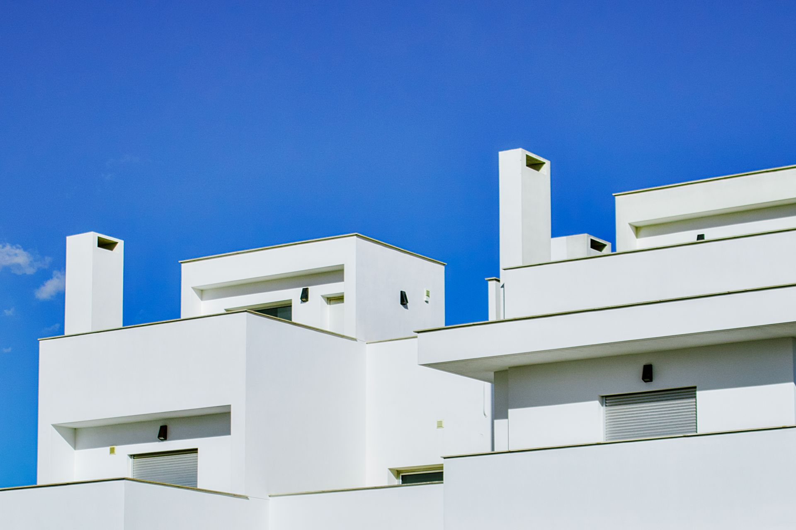

Vom Familienunternehmen zum Marktführer in der technischen Reinigung
Was als kleines lokales Projekt in Benidorm begann, ist heute ein Unternehmen, das die Reinigung der ikonischsten Wolkenkratzer und renommiertesten Hotels der Region übernimmt.
Ständige Weiterentwicklung
Im Laufe dieser Jahre haben wir die architektonische Entwicklung unserer Stadt miterlebt. Von der traditionellen Reinigung mit Leitern sind wir zu Pionieren beim Einsatz von Reinstwasser-Teleskopstangen und modernsten Arbeitsbühnen geworden.
Erfahrung, die Sicherheit schafft
Wir reinigen nicht nur Glas – wir managen Risiken. Unsere langjährige Erfahrung hat es uns ermöglicht, Sicherheitsprotokolle zu perfektionieren, die unseren Kunden absolute Ruhe garantieren.
Die Säulen unseres Erfolgs
In einer Branche mit viel Schwarzarbeit entscheiden sich unsere Kunden aus drei wesentlichen Gründen für uns:
Mittelmeer-Pünktlichkeit
Wir wissen, dass in der Dienstleistungs- und Gastronomiebranche in Benidorm Zeit Geld ist. Wir halten unsere Zusagen ein – ohne Ausreden.
Ehrlichkeit
Wenn eine Scheibe beschädigt ist oder aufgrund von Kalk eine Spezialbehandlung benötigt, sagen wir Ihnen das. Wir setzen auf langfristige Beziehungen, nicht auf eine schnelle Reinigung.
Innovation
Wir investieren kontinuierlich in modernste Maschinen, um bessere Ergebnisse in kürzerer Zeit und umweltfreundlicher zu liefern.
Profis für jede Herausforderung
Das Team von Limpiezas Luz de Luna besteht aus spezialisierten Fachkräften. Wir sind kein allgemeiner Reinigungsdienst; unsere Techniker sind speziell in der Beschaffenheit von Glas, der Behandlung von Rahmen und Höhenarbeiten geschult.


Stolz darauf, Teil von Benidorm zu sein
Als hier geborenes und gewachsenes Unternehmen engagieren wir uns für die lokale Entwicklung. Wir arbeiten mit dem Unternehmensnetzwerk der Marina Baixa zusammen – vom kleinen Laden in der Altstadt bis zu den großen Hotelketten am Levante-Strand.
Vertrauen Sie Ihr Image demjenigen an, der Ihre Fenster am besten kennt
Wir stellen Ihnen unsere Erfahrung zur Verfügung, damit Sie sich nie wieder um Schmutz, Salz oder schwer zugängliche Stellen sorgen müssen.